Afterwards, I recovered the software back from old floppy disks, I googled around and found out that the computer controlled turning lathe still is in use for hobby, training and learning purposes. So I decided to release the software as freeware.
It's translated in German and French (sorry, but at this time, English wasn't yet an option for me ;) and designed to run on old XT PCs with CGA or VGA cards. This type of PCs was common to find in schools since cheap and at this time often disposed by companies in favor of the "high-end"AT-PC technology. Today, the best solution is to run it using the fantastic DOSBOX emulator, which is available for Windows, Linux and Mac. Note that I never tested if the RS-232 communication is possible using DOSBOX, for example using a USB-to-Serial adapter.
Some key features:
- Works in CGA (displays half of the workpiece) and VGA mode.
- Able to send and receive CNC programs from the EMCO machine via RS-232 (serial port).
- Nice program editor with syntax formatting and error check and the possibility to add comments.
- Supports a lot of working tools.
- Allows to run a program in step-by-step mode (trace mode).
- Supports using a second monitor to display the running program by installing a Hercules graphics card as 2nd video card. This is quite handy while working and having a PC with two monitors was really impressive and special at this time.
- Execution speed can be adapted by defining wait cycles in the configuration options.
License:
The software is freeware and can freely be used and distributed, as long as it is not modified. The software is provided as it and you use it at your own risk! By downloading the archive file, you agree with these terms of usage.
The only little favor that I ask for, is that you send me a mail just telling me what you are doing with the application. It's just because I like to know if my work is actually useful for someone and because I'm curious by nature :)
Download:
Click here to get the ZIP archive.
It contains 3 DOS executable files, one for each version: CGA German, VGA German, VGA French. Tree demo CNC projects are included as well, so you can test it directly.
Source Codes: https://github.com/imifos/EMCO_Compact_5_CNC_Simulator_1.2_1992
Picture gallery and some explanations:
Click here to see some pictures of he old model of the EMCO Compact 5 CNC machine, I was used to work with.
Some screen shots from the application:
The main screen.
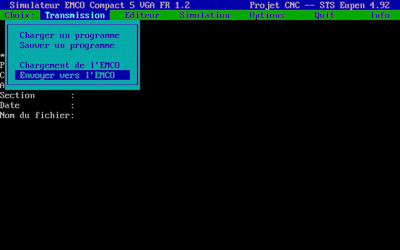
The program editor. Via the menu you can see the tools supported by the application and make a syntax check (to avoid sending commands making the CNC machine doing "funny"things :)
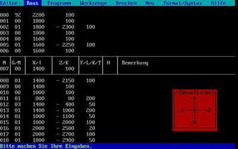
The tools information screens.
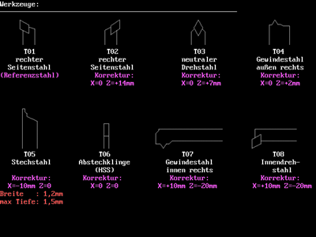
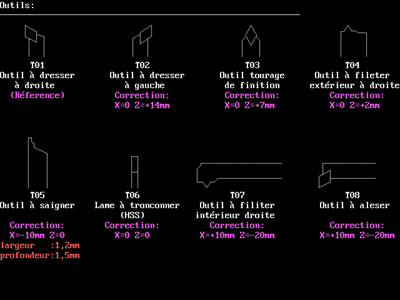
Help screen.
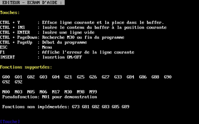
Starting the simulation by defining the workpiece parameters.
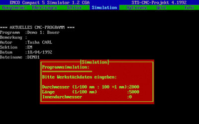
Simulation in CGA mode. Only half the workpiece is shown (which isn't a problem since it's round and turning).
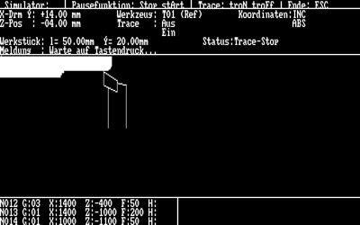
Some screen shots of the VGA version…
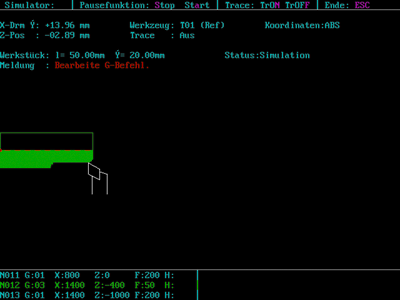
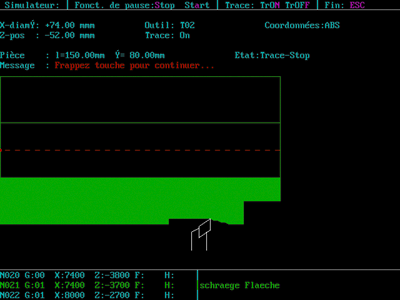
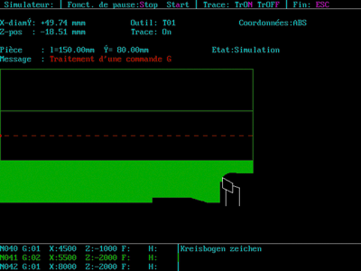
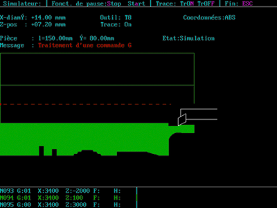
Future of this project:
When I find time...
- I'll try to make an English version.
- Try to find and buy an EMCO Compact 5, just for fun!
- Make it running on my BeagleBoard.
- Maybe, I'll make a more modern version (in Java) one day. The mathematics stuff is developed and I just need to port the user interface.